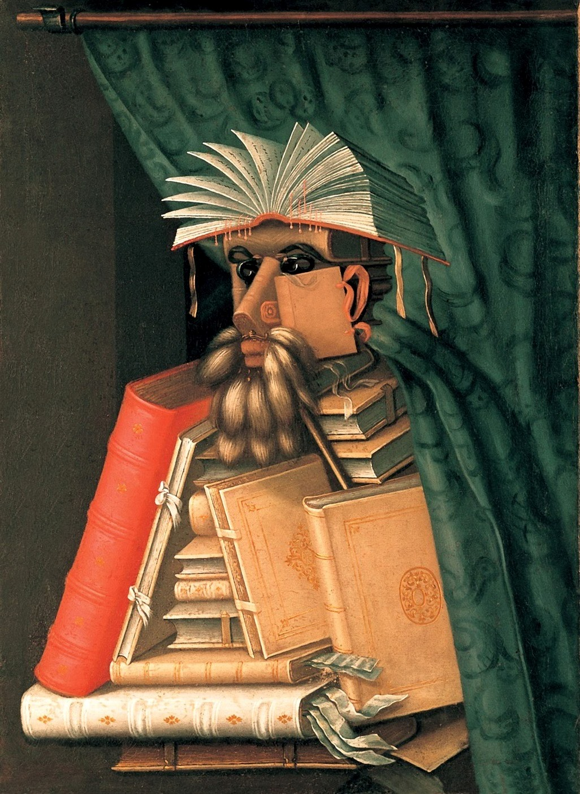

El bibliotecari
Galeria
Formulari
Creador
Inici
Descripció
Descripció: Oli sobre llenç. 97 x 71 cm.
Localització: Skoklosters Slott. Suècia
Oli sobre tela que mostra un suposat retrat d'un bibliotecari o llibreter però que en realitat és una total abstracció, perquè està format per un conjunt de llibres, papers i altres estris i objectes quotidians en una biblioteca, tots disposats i muntats formant la forma d' un home que amb el braç estreny contra el seu pit uns llibres, com estimant-amagar sota la seva capa. El quadre va ser pintat per un rara avis de l'estil anomenat "Manierisme": Per la data en què està datat el quadre, segurament va ser pintat en l'època en què Arcimboldo és el retratista de la cort de Ferran I d'Habsburg, rei d'Hongria i germà de l'emperador Carles I d'Espanya. Intuïm cert toc satíric en la pintura, no en va ser durament criticada en el seu temps, com la majoria de retrats del pintor, perquè sembla ser que el pintor es burlava de la ignorància de la gent rica, que només comprava llibres perquè fessin bonic a les prestatgeries de casa seva. No només això, es creu que el retrat està inspirat en un personatge real, el bibliotecari Wolfgang Laz, un senyor de múltiples talents (medicina, física, cartografia, història ...), un de tants savis que poblaven la cort de Ferran I. Això ens serveix per assenyalar l'univers culte de les corts europees de l'època, veritables pols d'atracció de grans artistes i erudits. La figura d'Arcimboldo va ser difuminant amb els anys i oblidant-se, fins que als anys 20 del segle XX va ser rescatada pels artistes avantguardistes, sobretot pels surrealistes, per raons òbvies.
Autor
Giuseppe Arcimboldo, un pintor italià que de jove es dedicava a dissenyar vitralls i frescos de catedrals locals, però que ha passat a la posteritat per les seves estranys retrats creats per muntatges de objectes, animals o vegetals. Definir a Arcimboldo com manierista és una mica forçat, se li adscriu a aquest moviment més que res per una qüestió de les dates de la seva vida i obra i, tensant molt el raonament, per la relació entre el món natural i l'ésser humà que desenvolupava en les seves obres. Però si tenim en compte les obres d'altres manieristes, com El Greco, Allori o Bronzino, poc tenen a veure amb els simpàtics deliris d'Arcimboldo, encara que la manera de pintar cada un dels objectes que conformen els seus retrats sigui totalment clàssica i naturalista. Pot ser que les pintures d'Arcimboldo fossin ideades com un joc o com una endevinalla: la gent veia el quadre i intentava endevinar qui era el personatge retratat, no només per la semblança, sinó perquè els objectes que el conformaven sempre estaven relacionats amb el personatge en qüestió, fins i tot pot ser que alguns d'aquests objectes tinguessin la funció de satirizarlo.
Iconografia
El bibliotecari del quadre està format literalment per llibres, és com dir que una persona es defineix pel que fa i per les coses necessàries per al seu treball o la seva vida. L'hàbil Arcimboldo crea els trets i la posi del personatge amb diferents objectes que formen part d'una biblioteca: llibres, papers, punts de lectura, cues d'animals. Hi ha tal mestratge en la disposició dels objectes, que un llibre una mica decantat és la galta del senyor, i la cinta del seu tancament, l'orella, un altre exemple seria el dels dits que en realitat són papers que sobresurten entre les pàgines del llibre o la cortina que a sobre de la pila de volums es converteix en la capa del personatge. Tot i l'absurd de la creació, tal com he explicat anteriorment, si ens fixem individualment en cada un dels objectes, està pintat amb gran virtuosisme i d'una forma molt precisa i correcta: realisme dins de l'abstracció.
Retrat d'Arcimboldo
Zoom obra
